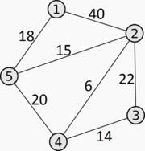

Алгоритм Дейкстри
Знаходить найкоротший шлях від однієї вершини графа до всіх інших вершин. Класичний алгоритм Дейкстри працює тільки для графів без циклів від'ємної довжин.
Варіант 1
Дана мережа автомобільних доріг, що з'єднують міста Івано-Франківської області. Знайти найкоротшу відстань від Івано-Франківська до кожного міста області, якщо рухатись можна тільки по дорогах.
Варіант 2
Дана карта велосипедних доріжок Латвії та Білорусі. Знайти мінімальну відстань, яку треба проїхати, щоб дістатися від Риги до Бобруйська.
Дано неорієнтований зв'язний граф G(V, U). Знайти відстань від вершини a до всіх інших вершин V.
Нехай u — вершина, від якої шукаються відстані, V — множина вершин графа, di — відстань від вершини u до вершини i, , w(i, j) — вага «ребра» (i, j).
Алгоритм:- Множина вершин U, до яких відстань відома, встановлюється рівною {u}.
- Якщо U=V, алгоритм завершено.
- Потенційні відстані Di до вершин з V\U встановлюються нескінченними.
- Для всіх ребер (i, j), де i∈U та j∈V\U, якщо Dj < di+w(i, j), то Dj присвоюється di+w(i, j).
- Шукається i∈V\U, при якому Di мінімальне.
- Якщо Di дорівнює нескінченності, алгоритм завершено. В іншому випадку di присвоюється значення Di, U присвоюється U∪{i} і виконується перехід до кроку 2.
 Нехай потрібно знайти відстані від 1-ї вершини до всіх інших. Кружечками позначені вершини, лініями — шляхи між ними («дуги»). Над дугами позначена їх «ціна» — довжина шляху.
Кроки алгоритму
Ініціалізація.
Розглядаємо відстані від першої(стартової) вершини до всіх решту як довжини ребер, що їх з'єднують. Якщо ребра нема, приймаємо відстань як безкінечність. Жодна вершина графа ще не опрацьована. Помічаємо стартову вершину як опрацьовану.
Крок 1.
Серед невідмічених вершин знаходимо ребро мінімальної довжини, яке з'єднує цю вершину з стартовою.
Крок 2.
Помічаємо вершину як опрацьовану і пробуємо покращити відстань від стартової вершини до всіх інших невідмічених вершин через цю вершину.
Крок 3.
Повторюємо крок 1 та крок 2, доки всі вершини не будуть опрацьовані. Отримаємо мінімальні відстані від стартової вершини до всіх решту вершин.
Код рішення на Pascal
vert,dist,point:array [1..100] of integer;
matr_sv:array [1..100,1..100] of integer;
i,j,n,k,m,vs,vf,min,imin:integer;
procedure read_;
begin
readln(n,k);
readln(vs,vf);
for m:=1 to k do
begin
read(i,j);
read(matr_sv[i,j]);
matr_sv[j,i]:=matr_sv[i,j];
end;
end;
begin
read_;
// ініціалізація
for i:=1 to n do
for j:=1 to n do
if matr_sv[i,j]=0 then matr_sv[i,j]:=1000;
vert[vs]:=1; point[vs]:=0;
for j:=1 to n do
dist[j]:=matr_sv[vs,j];
dist[vs]:=0;
for j:=1 to n-1 do
begin
// знаходимо мінімум dist серед невідмічених vert
min:=1000;
for i:=1 to n do
if (dist[i] < min)and(vert[i]=0)
then
begin
min:=dist[i];
imin:=i;
end;
vert[imin]:=1;
for i:=1 to n do
if dist[i] > dist[imin]+matr_sv[imin,i]
then
begin
dist[i]:=dist[imin]+matr_sv[imin,i];
point[i]:=imin;
end;
end;
for i:=1 to n do
write(vert[i],' ');
writeln;
for i:=1 to n do
write(dist[i],' ');
writeln;
for i:=1 to n do
write(point[i],' ');
writeln;
end.
Код рішення на Java
static int [][]m={
{0,0,0,0,0,0,0,0,0},
{0,1,1,1,1,1,1,1,0},
{0,1,0,0,1,1,0,1,0},
{0,1,0,0,1,1,0,1,0},
{0,1,1,1,1,1,0,1,0},
{0,1,0,1,0,1,1,1,0},
{0,1,0,0,0,0,0,1,0},
{0,1,1,1,1,1,1,1,0},
{0,0,0,0,0,0,0,0,0}
};
static int k;
static void wavRec(int x,int y){
m[x][y]=k;
if(m[x-1][y-1]==0){wavRec(x-1,y-1);}
if(m[x-1][y]==0){wavRec(x-1,y);}
if(m[x-1][y+1]==0){wavRec(x-1,y+1);}
if(m[x][y-1]==0){wavRec(x,y-1);}
if(m[x][y+1]==0){wavRec(x,y+1);}
if(m[x+1][y-1]==0){wavRec(x+1,y-1);}
if(m[x+1][y]==0){wavRec(x+1,y);}
if(m[x+1][y+1]==0){wavRec(x+1,y+1);}
}
static void printMas(){
for(int i=0;i < m.length;i++){
for(int j=0;j < m[i].length;j++){
System.out.print(m[i][j]+" ");
}
System.out.println();
}
}
public static void main(String[] args) {
// TODO Auto-generated method stub
k=2;
for(int i=1;i < m.length-1;i++){
for(int j=1;j < m[i].length-1;j++){
if(m[i][j]==0){
wavRec(i,j);
k++;
}
}
}
printMas();
}
}